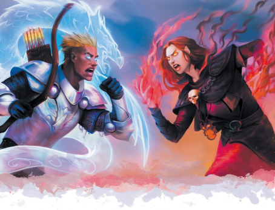
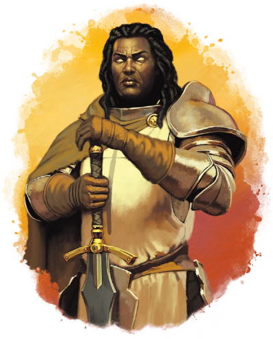

娜拉在魔群面前微笑着。
“你们才是势单力薄的那边。”
只见光翼从她的斗篷下展开，虹色的羽毛在大堂中闪耀。
“银焰的英灵们与我同在，我们的力量逢恶必摧。”
神术魔法通常是虔诚信仰和坚定意志的产物，但是阿斯莫通过某个天界生物的指引而与神力之源产生了更直接的联系。通常来说，这种恩赐不是世袭而来的，你也不一定能从外观上认出艾伯伦世界的阿斯莫；没有一个通用的表征可以鉴别一个人是否是阿斯莫，也无法人为地的方法制造阿斯莫。虽然看上去阿斯莫的存在似乎与艾伯伦世界里神不显现的说法相悖，但请记住阿斯莫不需要与神有直接联系。阿斯莫从神力之源中汲取力量，他们的精神导师是一个天界生物――一个天使、一条羽蛇或类似的精魂。阿斯莫可能会被看作信仰的卫士，但即使他们证明不了神明的存在。
第六章介绍了众多信仰对应的阿斯莫种族特性。
当您要创建一个阿斯莫角色时，请考虑以下几个问题:
信仰。阿斯莫是被神力所赐福的存在，但是哪种神力与你相关？你是得到了某个天命诸神的祝福，抑或是不朽王廷的某个活着的从者？
外观。你的阿斯莫表征会如何显现的？她总是显而易见的，还是引导神力时才会展现？
奉行。许多阿斯莫会选择成为牧师或圣武士，成为他们对应力量的守护者，可阿斯莫的赐福是并不依赖于信仰的与生俱来的的能力。你选择为光明服务，还是抗拒这神圣的召唤？
下面的信仰与阿斯莫一节将前两个问题，为你提供了你的外貌和信仰的细节描述。但关于奉行的问题完全掌握在你手中。你想扮演一个神圣卫士、天界生物的忠仆吗？或者你想成就一个反叛者的故事，做一个被召唤神圣使命选中但拒绝履行的人？
一般来说，阿斯莫的外貌和表征是非常罕见且多样的，以至于你不会被普罗大众认出来。然而当你展现你天赋神力时，大多数信奉于与你的力量之源对应宗教的人会联想到某个与他们的信仰相关的事物。阿斯莫通常被那些信徒视为受祝福的人，他们可能会认为你是他们信仰的忠仆，被召唤以完成一个神圣的使命。与之相反，和你信仰相左的人可能不会意识到你的本质，举个例子：很少有外人知道沃尔之血阿斯莫的表征。
你的神性可能会把你带入阴谋或危险。与你的信仰相关的强者们可能对你有他们自己的想法。你可能会实现某些预言。又或者你可能会被不认识的敌人盯上：砂主可能需要天命诸神阿斯莫的血来完成某个在一个世代里仅只尝试一次的仪式。在创建一个阿斯莫角色时，与你的DM商量一下：你想讲一个什么故事？你是想被赋予有一个远大的使命，还是想与隐秘的邪教干一架？是什么吸引你试着扮演一个超越凡人的角色？

阿斯莫是通过某个上位指引而与他们的神力之源相互联系的。可这是在什么时候以何种方式表现？你天生如此，还是某一天获得了这份力量？下面的阿斯莫起源列表为你提供了几种可能性参考。
阿斯莫的起源Aasimar
Origin
|
D6 |
阿斯莫起源种类 |
|
1 |
阿斯莫血统：一般来说，阿斯莫的特性不是靠遗传得到的，但你是。你家这种血统从何而起？你还有多少家人？你是否与教会关系密切并因你恩赐而倍受到赞美？或者你的家族早就被驱逐了，被贴上了异端和叛教者的标签？ |
|
2 |
高贵的出生：虽然你的家谱里在某一代曾经展现过阿斯莫，但你的家族以虔诚和美德而闻名。你的家族其他成员可能是牧师或圣骑士，你的家可能住在一个与达安维Daanvi、伊里安或西拉尼亚Syrania相关的显化区域。你是家族的骄傲继承人，还是对家族的高贵传统感到不满? |
|
3 |
幸运的事件：你在出生或孩提时就获得了你的天赋。你们的群落没有出现过阿斯莫的历史，但是人们以你和你的恩赐为荣。你和你的家族保持着紧密的联系吗？还是说他们因为战争或是邪恶势力蒙难了？ |
|
4 |
天界的纽带：你不是与生俱来的阿斯莫。你的阿斯莫能力时你与作为你的引导者的天界生物相遇后显现出来。你自愿作为这个天界生物于艾伯伦世界的执行者，你和�k的纠葛比典型的阿斯莫更紧密。这个天界生物的目的是什么，为什么�k选择了你? |
|
5 |
实验的造物：你的天赋不是自然而来的：他是奥术科学的产物。也许瓦塔利斯家族试图创造有神性的灵魂。也许你体内被植入了一块囚禁着天界生物的凯博尔龙晶。你是志愿者还是受害者？你是与你的天界引导者齐头并进，还是说你觉得�k是你的奴仆? |
|
6 |
神秘的过去：你完全不记得你的童年。也许你是在哀伤故地醒来的，或者是在可怕的战场上唯一的幸存者。你唯一关于你的过去和你的目的线索是来自你的天界引导者给予你的如梦境般的幻象。你能解开这个谜吗？你确定要解开吗？ |
阿斯莫是被神力所赐福的存在，但是哪种神力与你相关？不朽王廷和银焰都是已知的神力之源，但她们彼此有很大的不同。本节将介绍艾伯伦世界的主流宗教，以及阿斯莫是如何与每一种信仰联系在一起的，同时还包括对应阿斯莫亚种和背景。阅读的时候请结合5E的阿斯莫的设定一起思考。你的上位指引者是你的特征之一，她们的本质应该与你的信仰有所关联。使用本节中提到的信息与DM一起设定指引者的具体细节。通常，精魂导师只能通过梦境和幻象与阿斯莫进行沟通。你的情况是这样的吗？或者你曾经和你的指引者有过更直接的对话？指引者是否对你提出了具体的要求或给你分配了任务？或者她的声明是含糊不清的？她是在考验你，还是在努力说服你去拥抱你的命运？你是唯一与之维系的阿斯莫吗?或者他是一群阿斯莫的守护者？如果是的话，你见过其他人吗？
作为沃尔之血的阿斯莫，你不是被某个遥不可及的天使选中的，你的力量来自你自身。内在的神性与与你同在，是你自己的神性火花引导你走上了晋升之道。
外观：寻者阿斯莫Seeker Aasimar出现在人类当中。有些人面色苍白，几乎像吸血鬼一样，而另一些人则显得特别活跃且健康。运用能力时你的眼睛经常发光，你的能量表现看上去一般是红色或黑色。
指引：指引你的是你自身的某个侧面，把她想象成你将会成为的神�o，努力引导你迈向晋升。指引通常表现为直觉或想象的形式，你不能直接和她对话。你的指引主要关心你自己的提升吗？还是出于寻者的原则保卫你的聚落以及对抗死亡？
背景：觅神者阿斯莫是非常罕见的，即使是信徒也常常不会认识到你的本质。如果你专注于保护无辜，你可能会是个平民英雄。如果你追求个人提升，你可以成为贤者或隐士。或者你可能是一个流浪或化外之民，在挣扎求生的过程中发现了你的神圣火花。
亚种：作为沃尔之血的阿斯莫，使用第六章中提到的寻者阿斯莫Seeker Aasimar亚种数据。
阿斯莫很少会和光芒大道有关，尽管这个信仰确实有他的斗士――离梦人――被另一个世界的精魂所引导。虽然一切皆有可能，但光芒大道还没有出现过阿斯莫。
当你出生时，你体内被灌输进了某个天使的不朽精华。这很可能是一场意外：你是在天使的物质形态被摧毁的瞬间被构造出来的，而当她被重塑时，她的灵魂碎片进入了你的体内。但也有可能是天使选择了你作为他在物质位面的化身或代理人。无论如何，这个精魂体现了位面的理念 （详见第5章），并鼓励你体现这一原则。
作为一个位面阿斯莫，你的外表比其他阿斯莫更有异地特色。你有位面形态，表现了你对应的位面和天使。当你展现你的能力时，这变得更加更为明显。只有学者和贤者才会认出你是什么存在，而普通人通常只会好奇地看着你。
以下位面最有可能出现阿斯莫。
达安维Daanvi。你与一个天使建立了维系，这个天使是为正义服务的律令化身。你的皮肤和头发带有金属光泽，通常是铜或青铜色，你的翅膀看上去井然有序。达安维Daanvi阿斯莫通常使用守护阿斯莫的数据。你的本能驱使你在法律的框架内为更伟大的善良而战。你更有可能拥有骑士、士兵或城市守卫的背景，而不是一个乡下的平民英雄。你的引导者可能是一个异界神使――a judge on an inevitable tribunal（译者：不知道如何翻译），�k敦促你执行法律。或者你被维系与担任某个炽天神使的狱卒――他们都被限制在各自的位面里执行正义。举个例子，希拉尼亚位面的炽天神使哈扎利尔将光辉偶像流放到了物质位面，也许是�k担心这些堕落天使正在做的有损艾伯伦的事，�k为此敦促你收拾他们。
费尼亚Fernia。你的引导者是火焰的正面象征：火焰提供光明和温暖，驱走黑暗。费尼安阿斯莫通常有着深红色的皮肤，眼睛或有如冷焰燃烧般的头发。使用第六章中提供费尼安阿斯莫亚种数据。你的引导者为你提供驱散恐惧和勇斗黑暗的力量。费尼安阿斯莫通常是使用火焰元素的术士：神魂起源是一个很好的选择来反映你与你的天使的联系，或者你可以使用红龙的龙脉起源，同时将你的的表征描述改为天使而不是龙。
伊瑞安Irian。你维系于一个圣光的天使，一个激发希望和生命的精魂。你的皮肤和头发有着明亮的外观，你的翅膀是由纯粹的光组成，当你施放光亮术戏法时，你可以把她描述为你的身体本身在发光。大多数伊瑞安Irian阿斯莫使用守护阿斯莫亚种的数据。你的引导者可能是一个次等天使，或者更不寻常的是，你会维系于伊瑞安的创造主）身上。阿拉姆，庇护所的创造主（the Architect of the Refuge），她会敦促你给没有希望的人以希望。园丁会激励你去治愈伤痛，为生存而战。黎明女皇会要求你充分发挥你的潜能，并帮助其他人做同样的事。其中任何一种都会引导你去对抗玛伯尔Mabar吸取生命的不死生物和其他黑暗力量。作为希望的捍卫者，你可能是一个民间英雄或一个隐士。拉扎尔联邦的洛里斯特亲王是一个伊瑞安Irian阿斯莫，他统治着一个被称为天堂舰队的城邦。如果你与洛里斯特亲王有关系，你可能是个水手或贵族。
玛伯尔Mabar。你维系于一个被困在玛伯尔Mabar被的黑暗力量缓慢改变了的天使。选择一个这节里提到的其他位面，这个天使最初就是来自于那个平面，你的外观与被该位面其他的位面阿斯莫大体相似，但你的颜色是暗淡的，好像光芒正在从你身上褪去，你的眼睛是纯粹的黑暗。使用第六章中的玛巴兰阿斯莫亚种的数据。你的引导者仍然激励你遵循她起源位面的原则，但是她正在与玛伯尔Mabar压倒一切的绝望以及从凡人身上吸取生命与光芒的渴望作斗争。当你使用凋零之触（Consuming Touch）时，你正在将这种能量输送给你的引导者。你的向导也许希望有一天你能把她从玛伯尔Mabar中拯救出来，尽管至今不曾有任何一个不朽存在能逃脱她的腐化。又或者，她只是单纯地鼓励你遵循其起源位面的原则，以平衡其日益增长的饥饿和绝望。你可能是一个流浪儿或隐士，被玛伯尔Mabar的幻象所困扰，或者你可能是一个贤者，寻求解开位面间的秘密。
撒法拉斯Shavarath。撒法拉斯Shavarath的天使是从军的勇士。你的皮肤和头发看起来像钢铁。撒法兰阿斯莫通常使用守护阿斯莫亚种的数据。你的翅膀是由刀刃组成的。如果你的引导者来自正义军团，她会敦促你为正义而战；你可能是骑士，也可能是士兵。如果你的引导者与自由军团有关，她会敦促你与各种形式的暴政和压迫作斗争，也许会让你成为一个平民英雄。对于一个咒剑宗主邪术师来说，这是一个有趣的选择：你的引导者赐予你他们的天界武器，同时敦促你投身战斗。
西拉尼亚Syrania。你和西拉尼亚Syrania某个主天使（Dominion）有联系。每一个主天使（Dominion）都有一个特定的领域，反映出她的影响和倾向；你的主天使（Dominion）是战争天使吗？自然的？还是商业方面？她在这个广阔的领域里有什么特长？西拉尼安阿斯莫通常使用守护阿斯莫亚种的数据，并且有典型的羽毛翅膀，但是，你的外表可能会在某种程度上反映出你的引导者的领域。你的引导者会敦促你彰显她的领域：如果她是剑之天使，她会希望你精通剑术！她也通过你的眼睛观察世界，她可能会派你去视察某些事件或采取与她的领域相关的行动。

|
78页边框： 阿斯莫，巨灵裔和提夫林Aasimar, Genasi, and Tieflings 费尼安阿斯莫、提夫林以及巨灵裔之间有什么不同？他们都是与火有关的外界类人生物。 阿斯莫被位面的善良面所触及，并与来自该位面的天界生物有直接的联系。费尼安阿斯莫体现了火焰的积极意味，这是一种保护生命和以及驱逐黑暗的力量。辨认出他们的人会认为他们是被祝福的并认为他们是仁慈之人。 提夫林被位面的邪恶面所触及。费尼安提夫林反映了火焰的破坏和混乱一面，人们普遍认为他们的存在会带来火灾。辨认出他们的人会认为提夫林是被诅咒且危险的存在。 巨灵裔并不是邪魔或是天界生物：他们是纯粹的元素。虽然相当罕见，但被发现的时候巨灵裔通常被认为是中性的，这是一种非常显著的变异，但并不意味着可怕或值得庆祝。 |
银焰是艾伯伦世界中最常见的阿斯莫起源。有些人认为，泰拉・麦伦是一个银焰阿斯莫，同样也有可能所有的银焰守护者在就任后都变成了阿斯莫。大多数银焰的追随者都听说过有虹彩羽翼的勇士的故事，一旦你的本质被发现，他们将会对你报以信任。
外观：通常情况下，银焰阿斯莫看起来和人类无二，直到她们露出虹彩的羽翼。然而，有些银焰阿斯莫还具有其他的羽蛇特征：比如拥有虹彩的头发或者蛇形的眼睛而不是羽翼。有传言说有一个蛇人种族――苏拉沙卡――皈依于银焰。银焰阿斯莫能量的表现要么是银白色的，要么是五彩斑斓的。
指引：一般情况下，你的指引者是一条羽蛇――为世界带来银焰的存在。另一个选择是你与泰拉・麦伦晋升后的灵魂，银焰之声有关。银焰的初衷是保护无辜者不受超自然邪恶的伤害。这就是你的指引者鼓励去做的事吗？还是说你有更伟大的使命?
背景：如果教会领袖觉察到银焰阿斯莫的存在，他们通常会受到教会的欢迎，你可以用侍僧或士兵的背景来反映这一点――如果你是圣堂武士就选士兵，是修士就选侍僧。另一方面，即便你以前与银焰信仰没有任何干系，你的精魂导师也会向你伸出橄榄枝：平民英雄，流浪儿，甚至罪犯都可以在这个故事里扮演一员。
亚种：银焰阿斯莫使用守护阿斯莫亚种的数据，展现的虹彩羽翼会让人联想到羽蛇。被焰中影所腐化的阿斯莫可以转而使用堕落阿斯莫的数据。
天命阿斯莫是由某个特定的神�o，至少是一个献身于那个神�o的天界生物所选择的。作为天命诸神阿斯莫，你被敦促于作为�k们的化身一般，体现�k们的美德以及激励信徒。如果你是一个杜・哈拉的阿斯莫，你可能会是一个最高尚的武士。如果你是一个奥林的阿斯莫，那你会发掘知识并用她来指导别人，发展文明。天命诸神的信众一般都对天命诸神阿斯莫表示尊敬，而且可能会向你寻求帮助。
黑暗六神的阿斯莫异常罕见，用提夫林的数据可能会更好一些。
外观：天命诸神阿斯莫通常看上去和人类无异，通常的对应的神�o形象类似，像强壮的铁匠之于昂纳塔，睿智的贤者之于奥林，沧桑的农夫之于阿拉瓦伊。能量表现为典型的金光。
指引：你的指引者是一个皈依同一个神�o的天界生物，通常会是伊瑞安Irian或西拉尼亚Syrania的天使。他们会鼓励你彰显你所代表的神�o的美德。他们对你有更深层的目的吗？
背景：天命诸神阿斯莫是被选中的，而不是天生的，他们被选中通常是因为他们已经体现了神�o的必要美德。昂纳塔或寇・柯兰是行会工匠，杜・顿恩或杜・阿拉是士兵或骑士，奥林是贤者，巴力诺是化外之民，欧拉卓是罪犯或骗子（尽管有一颗善良的心！）。
亚种：天命诸神阿斯莫可能适用所有的亚种。守护阿斯莫是一个常见的选择，但天罚阿斯莫也不是不可以。一个皈依天命诸神的精灵可以使用第六章中提供的阿斯莫亚种，而与昂纳塔有关的阿斯莫甚至可以使用费尼安亚种。
你已经被一个高阶不朽议员――你的不朽的精灵先祖――所选中，被灌输了他们的一小部分力量。在艾伦诺之外的世界，你通过充当他们的手和眼睛以实现你对不朽王庭的价值。
外观：作为不朽王庭的阿斯莫，你的外表就像一个艾伦诺精灵。大多数艾伦诺阿斯莫看起来都像一个有着明亮的眼睛和生命灵光的精灵。然而，你可以有着类似于木乃伊一般干燥的外观――即使你仍然是个健康的活人。你的能量表现为典型的蓝色或紫色。
指引：你的精魂导师是不朽王庭的某位不朽议员，而且很可能是你自己的先祖之一。他们是想让你为艾伦诺和不朽王庭的利益服务，还是想让你成为他们的私人代理？他们是想让你在一场与尚生者的斗争中帮忙，还是想让你在追求巨龙预言的过程中帮忙，还是想让你在一场王庭内部的反腐斗争中帮忙？
精灵不会做梦，但你的祖先可以在你出神时对你说话。你们的祖先也曾是凡人，你们的关系可能比阿斯莫和引导者之间的典型关系更加直接和亲密。
背景：如果你是一个被认可的不朽王庭代理人（或是与不死生物战斗的死亡守卫成员），你可以选择侍僧或士兵的背景，其特征反映了你作为一个议庭特使所行使的权威。如果你是一个秘密特工，你可能是一个间谍或骗子。如果在被你的引导者选中之前，你已经与世隔绝多年，那么隐士背景会是个不错的选择，因为他向你透露了一个巨大的秘密。
亚种：作为一个艾伦诺阿斯莫，使用第六章中提到的王庭阿斯莫亚种数据来反映你的精灵本质。
|
79页边框： 非人类阿斯莫Nonhuman Aasimar 阿斯莫并不仅限于人类。银焰阿斯莫也会出现在恶魔荒原的加什卡拉兽人里，而天命诸神阿斯莫也会从天命诸神众多的信众中诞生。对具有人类血统特征的种族来说，这是如何发生的呢？关于外观：当阿斯莫被描述中“像人类”时，你可以转而说他们看起来像是兽人、大地精或任何其他种族。然而，当涉及到种族特性时，规则上来看，你的非人类阿斯莫将不会拥有任何与你的血统相关的特性。你可以说你的阿斯莫看起来像个矮人，但是他们不会对毒素具有特殊抗力，也不会有石中精妙特性。 如果你认为你的阿斯莫角色很需要这些与其原种族相关的特性，你可以试着跟DM一起设定一个相关的阿斯莫亚种，就像王庭阿斯莫拥有的核心规则里精灵拥有的出神能力等种族特征。但是想要白嫖是不可能的：如果你获得了与另一个种族相关的特性，其他的特性就要被移除以平衡强度。另一方面，如果你只要外观的改变就满足了――虽然你看起来像个矮人，但实际上你并不能抵抗毒素――那么你可以使用任何亚种来代表其他种族的阿斯莫。 |